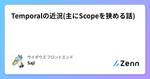
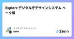
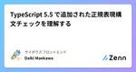
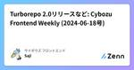

サイボウズ フロントエンドのフィード
https://zenn.dev/p/cybozu_frontend
サイボウズのフロントエンドに関わる人が発信するPublicationです
フィード

Temporalの近況(主にScopeを狭める話) 1
1
サイボウズ フロントエンドのフィード
Temporal についておさらいTemporal は新しく JavaScript の仕様として提案されている「日時を操作するための新しいグローバルオブジェクト」です。現在は Stage3 のプロポーザルとして細かい API などの形が協議されています。https://github.com/tc39/proposal-temporalTemporal は既存の Date オブジェクトにある次のような課題を解決するべく提案されました。ユーザーの現地時間と UTC 以外のタイムゾーンはサポートされないパーサーの動作の信頼性が低い日付オブジェクトが何を指しているのかわかりづら...
7日前

Explore デジタル庁デザインシステム ベータ版 4
サイボウズ フロントエンドのフィード
https://design.digital.go.jp/ デジタル庁デザインシステムデジタル庁デザインシステムとは、名前の通りデジタル庁が提供しているデザインシステムです。行政機関や公共性の高い組織のWebサイト、アプリケーションを構築する際に利用することを念頭に置いて構築されています。2024/05/30にv2.0.0としてベータ版が公開されました。 デジタル庁デザインシステムの内訳デジタル庁デザインシステムには以下の成果物が含まれています。デザインシステム本体Figmaのデザインデータ v2系Figmaのデザインデータ v1系React製のコードスニペット...
7日前

TypeScript 5.5 で追加された正規表現構文チェックを理解する 38
サイボウズ フロントエンドのフィード
TypeScript 5.5で、@graphemeclusterさんによって正規表現リテラルの構文チェックが導入されました🎉この構文チェックによって、正規表現に間違いがあった場合、事前にTypeScriptがエラーを出力してくれます。https://devblogs.microsoft.com/typescript/announcing-typescript-5-5/#regular-expression-syntax-checkingこの機能について、次のことが気になったので調べてみました。どんな構文がエラーになるかなぜ導入されたかどうやってチェックしているかJavaS...
11日前

Turborepo 2.0リリースなど: Cybozu Frontend Weekly (2024-06-18号) 3
サイボウズ フロントエンドのフィード
こんにちは! サイボウズ株式会社フロントエンドエンジニアの Saji (@sajikix) です。 はじめにサイボウズでは毎週火曜日に Frontend Weekly という「一週間にあったフロントエンドニュースを共有する会」を社内で開催しています。今回は、2024/6/18 の Frontend Weekly で取り上げた記事や話題を紹介します。 取り上げた記事・話題 feat: Add support for TypeScript config fileshttps://github.com/eslint/rfcs/pull/117ESLint の設定ファイルを ...
12日前

Server-Sent Events を複数パターンで実装して理解を試みる
サイボウズ フロントエンドのフィード
Server-Sent Events (SSE)目新しい技術というわけではありませんが、最近 Server-Sent Events (SSE) について言及する記事をよく見かけます。何番煎じかはわかりませんが、個人的に興味があることと、正直触ってみたことがなかったので、コードを書きつつ調べてみました。※本記事で登場するサンプルコードは次のリポジトリで公開しています。https://github.com/mugi-uno/sse-sandbox SSE とはSSE 自体を解説する記事は無数に存在するため詳細な説明は割愛しますが、簡単に言うと、サーバーからクライアントへ一方...
14日前
Storybook8.1からSubpath importsを使ったモジュールのモックができるように
サイボウズ フロントエンドのフィード
Storybook の 8.1 のリリースで、Storybook 上でコンポーネントを表示するときに特定のモジュールをモックできるようになった。 Module mockhttps://storybook.js.org/blog/type-safe-module-mocking/https://storybook.js.org/docs/writing-stories/mocking-modulesNode.js の Subpath imports を使い、package.json のimportsに Storybook で表示する際にモックするファイルを指定できる。モジュールを...
18日前
デジタル庁デザインシステムのサンプルコンポーネントなど: Cybozu Frontend Weekly (2024-06-04号)
サイボウズ フロントエンドのフィード
こんにちは！サイボウズ株式会社フロントエンドエンジニアのおぐえもん（@oguemon_com）です。 はじめにサイボウズでは毎週火曜日にFrontend Weeklyという「一週間にあったフロントエンドニュースを共有する会」を社内で開催しています。今回は、2024年6月4日のFrontend Weeklyで取り上げた記事や話題を紹介します。 取り上げた記事・話題 Portable stories for Playwright Component Testshttps://storybook.js.org/blog/portable-stories-for-playwri...
1ヶ月前
TypeScriptは26以上のメンバーを絞り込めない！
サイボウズ フロントエンドのフィード
この記事で扱うコードは全てTypeScript Playgroundにまとめていますので、もし実際にコードを確認したい場合はそちらでご確認ください。 26以上のメンバーを持つMappedTypeで型の絞り込みができない表題の通りですが、実際にコードを見てもらうのがわかりやすいでしょう。const maxMap = { one: {a: 1}, two: {b: 2}, three: {c: 3}, four: {d: 4}, ... twentyThree: {w:23}, twentyFour: {x:24}, ...
1ヶ月前
Google I/O 2024で発表された10の最新情報など: Cybozu Frontend Weekly (2024-05-28号)
サイボウズ フロントエンドのフィード
こんにちは！サイボウズ株式会社フロントエンドエンジニアのおぐえもん（@oguemon_com）です。 はじめにサイボウズでは毎週火曜日にFrontend Weeklyという「一週間にあったフロントエンドニュースを共有する会」を社内で開催しています。今回は、2024年5月28日のFrontend Weeklyで取り上げた記事や話題を紹介します。 取り上げた記事・話題 RFC: Initial CSS Level Categorizationhttps://github.com/CSS-Next/css-next/discussions/92CSSの進化に伴い、CSS3と...
1ヶ月前
明示的な型注釈によって推論コストを下げるというアプローチ
サイボウズ フロントエンドのフィード
近年、TypeScript を取り巻くエコシステムでは、ユーザーに明示的な型注釈を求めることで、推論や型生成のコストを下げるというアプローチが注目されています。TypeScript 5.5 beta で 発表された --isolatedDeclarations オプションはその代表的な機能ですし、Deno の提供する新しいパッケージレジストリ JSR が提唱している slow types という考え方も同様のアプローチを求めるものです。この記事では、上記のようなアプローチが提案された経緯や解決したい課題について、TypeScript を利用するエコシステムの状況も踏まえて整理します。...
1ヶ月前
Next.js で React Compiler を試しつつ出力コードを見てみる
サイボウズ フロントエンドのフィード
React CompilerReact 19 Beta から React Compiler が導入され利用可能となりました。https://react.dev/learn/react-compiler※単体での検証としては次の記事が参考になります。https://zenn.dev/kazukix/articles/react-compiler Next.js での利用React Compiler のドキュメント内には、各種バンドラやフレームワークで利用する方法も記載されています。というわけで、Next.js で実際に試してみよう、というのがこの記事の主旨です。 事...
1ヶ月前
Remix v3 の今後についてなど : Cybozu Frontend Weekly (2024-05-21号)
サイボウズ フロントエンドのフィード
こんにちは！サイボウズ株式会社 フロントエンドエキスパートチームの @mugi_uno です。 はじめにサイボウズ社内では毎週火曜日に Frontend Weekly と題し「一週間の間にあったフロントエンドニュースを共有する会」を開催しています。今回は、2024 年 5 月 21 日 の Frontend Weekly で取り上げた記事や話題を紹介します。 取り上げた記事・話題 HTML attributes vs DOM propertieshttps://jakearchibald.com/2024/attributes-vs-properties/HTML a...
1ヶ月前
フロントエンド開発者/技術者ハンドブック2024など: Cybozu Frontend Weekly (2024-05-14号)
サイボウズ フロントエンドのフィード
こんにちは！サイボウズ株式会社フロントエンドエンジニアのおぐえもん（@oguemon_com）です。 はじめにサイボウズでは毎週火曜日にFrontend Weeklyという「一週間にあったフロントエンドニュースを共有する会」を社内で開催しています。今回は、2024年5月14日のFrontend Weeklyで取り上げた記事や話題を紹介します。 取り上げた記事・話題 The Front End Developer/Engineer Handbook 2024https://frontendmasters.com/guides/front-end-handbook/2024...
2ヶ月前
拡張性に優れた React Aria のコンポーネント設計
サイボウズ フロントエンドのフィード
React Aria Components は Adobe によって提供されている Headless UI コンポーネントライブラリです。振る舞いや国際化に, アクセシビリティに関する機能を備えており、Button や Input, TextField, Label などのシンプルな要素から、DatePicker や ComboBox などの様々なコンポーネントが提供されています。今回は React Aria Components の設計について紹介します。 React Aria Components のコンポーネントの設計React Aria Components の API ...
2ヶ月前
TSKaigi2024参加レポート
サイボウズ フロントエンドのフィード
2024/5/11日に初開催された、TSKaigiに参加してきました。https://tskaigi.org/私が聴講したセッションのタイムライン順に、軽いまとめ＆感想と、TSKaigi全体を通しての感想のまとめです。備忘録がてらの事後記録のため、詳細は書いていません💦(あと、LTセッションに関しても自分が聞いたものは残していますが、感想は含めていません。あしからずです🙇🏻♀️) 👏🏻 KeyNote「ただセッションを聞くだけでなく、TypeScript仲間と交流することでTSコミュニティを盛り上げてほしい」といったオープニングのもと、TSKaigi2024がスタートされ...
2ヶ月前
React 19 Beta の公開など : Cybozu Frontend Weekly (2024-05-07号)
サイボウズ フロントエンドのフィード
こんにちは！サイボウズ株式会社 フロントエンドエキスパートチームの @mugi_uno です。 はじめにサイボウズ社内では毎週火曜日に Frontend Weekly と題し「一週間の間にあったフロントエンドニュースを共有する会」を開催しています。今回は、2024 年 5 月 7 日 の Frontend Weekly で取り上げた記事や話題を紹介します。 取り上げた記事・話題 React の fetch() 拡張が削除https://github.com/facebook/react/pull/28896React に標準で含まれていた fetch() に対するパッ...
2ヶ月前
EditContext APIを理解する
サイボウズ フロントエンドのフィード
https://developer.chrome.com/blog/introducing-editcontext-api EditContext APIとはなんぞやEditContext APIはChrome121版でリリースされた比較的新しい機能です。現在執筆時点（2024/04/19)ではchromiumベース以外のブラウザではまだ実装されていないのでご注意ください。caniuseこの機能は、一言で言うならばcontenteditableからDom Viewの機能を落としたようなものになっており、IMEやText Bufferに関する機能を提供してくれます。 c...
2ヶ月前
「実装例から見る React のテストの書き方」をアップデートする
サイボウズ フロントエンドのフィード
社内の人から、自分が以前書いた次の記事が「便利で助かった！書いた時から何かアップデートある？」ってメッセージがきた。https://blog.cybozu.io/entry/2022/08/29/110000そんな便利だなんてどうもありがとうございますウフフ、と思いながら書いた日を見てみると 2022-08-09 だった。もうすぐ 2 年経とうとしてる。時の流れが早くて怖い。この記事に書かれた実装例はリポジトリにまとめていたんだけど、当然、何かメンテをしていたわけもなく、2022 年当時の状態がそのまま残っていた。せっかく便利に思ってくれる人がいたので、内容をアップデートする。...
2ヶ月前
Next.js 14.2リリースなど: Cybozu Frontend Weekly (2024-04-16号)
サイボウズ フロントエンドのフィード
こんにちは！サイボウズ株式会社フロントエンドエンジニアのおぐえもん（@oguemon_com）です。 はじめにサイボウズでは毎週火曜日にFrontend Weeklyという「一週間にあったフロントエンドニュースを共有する会」を社内で開催しています。今回は、2024年4月16日のFrontend Weeklyで取り上げた記事や話題を紹介します。 取り上げた記事・話題 tailwindcss-mixinshttps://github.com/brandonmcconnell/tailwindcss-mixinsTailwind CSSで、複数の要素に同時に適用するユーティ...
2ヶ月前
ESLint v9リリースなど: Cybozu Frontend Weekly (2024-04-09号)
サイボウズ フロントエンドのフィード
こんにちは! サイボウズ株式会社フロントエンドエンジニアの Saji (@sajikix) です。 はじめにサイボウズでは毎週火曜日に Frontend Weekly という「一週間にあったフロントエンドニュースを共有する会」を社内で開催しています。今回は、2024/4/9 の Frontend Weekly で取り上げた記事や話題を紹介します。 取り上げた記事・話題 tailwindcss-signals : Signals for Tailwind CSShttps://github.com/brandonmcconnell/tailwindcss-signals/...
3ヶ月前